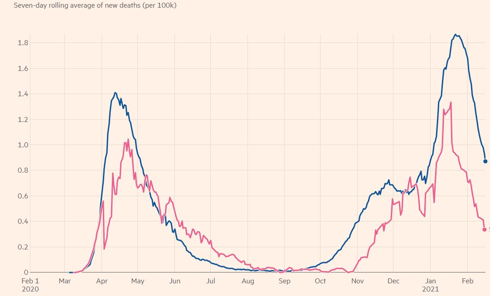
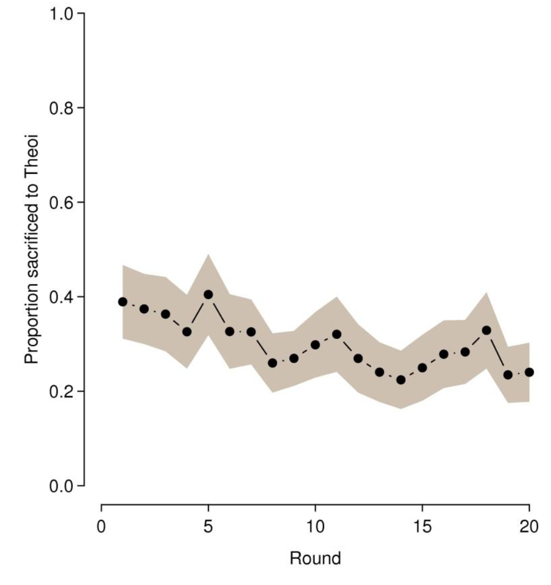
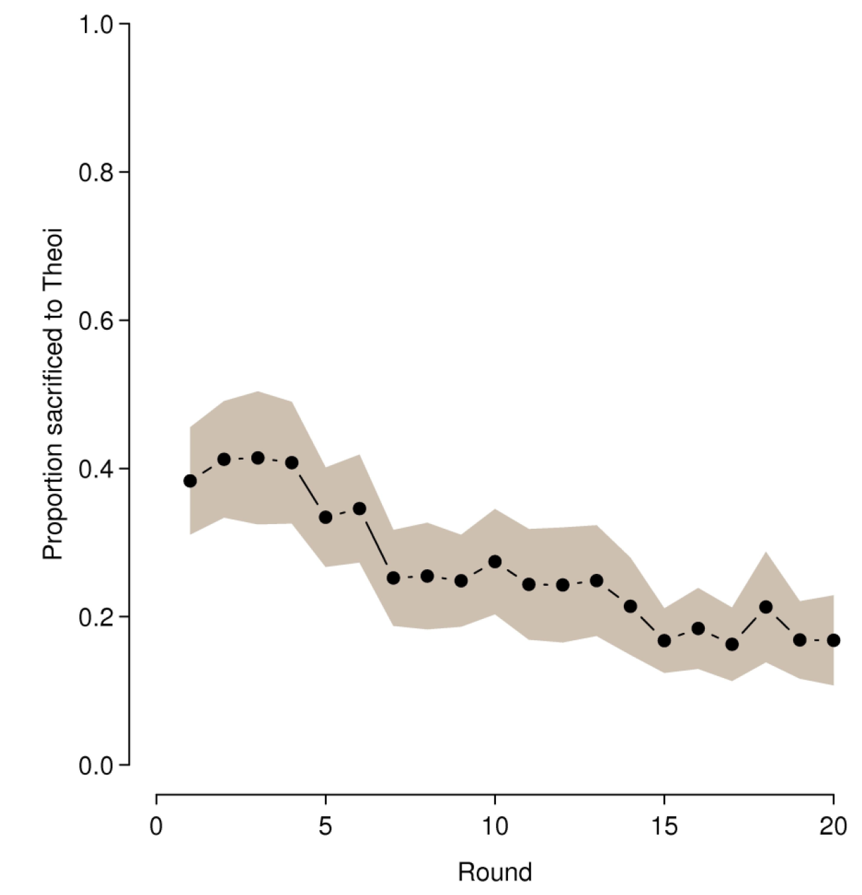

With a recent publication in Nature that reported lockdowns have no effect on covid-cases or covid-deaths, there are now over 30 studies that fail to find any covid-reducing benefits of lockdowns. Worse, across countries and time, more severe lockdowns are just leading to more deaths as they enforce unhealthy behaviour and reduce the capacity of the health system to look after people.
Yet, many think they can clearly discern the benefits of lockdowns in the available data. And not just for lockdowns: also for masks, which have been aptly described as garden fences supposed to stop mosquitoes. An instructive method to challenge these beliefs is to play the game “spot the policy effect” wherein one assembles graphs of how claimed cases or deaths developed over time in a set of countries and then asks the onlookers to predict when lockdowns or compulsory masks (or other restrictions) came into effect, if at all. Take the following graph of a recent Financial Times article:

This picture shows the number of claimed covid-deaths per 100 thousand inhabitants per day for two European countries. Guess which one of these countries instigated ‘tough’ lockdowns at what moment, and try additionally to guess when masks or other restrictions might have come in? It is basically impossible to get it right unless you already know the answer.
If you think lockdowns or masks work, you’d think they were introduced a few weeks before some clear decline or change in the trend of the numbers of covid-deaths, right? And you'd think the place with less deaths in the same continent did tougher lockdowns, right? Well, you’d then guess wrong: the blue line is for the UK which instigated its first lockdown at the end of March 2020 after the trend had already switched, instigated mask policies in the summer and then a more or less continuous new lockdown from early November. That second lockdown was instigated just before the first peak of the second wave, but 2 months before a spectacular third peak that made the UK the country in Europe with the highest proportion of covid-deaths among all large European countries.
The other country (in red) is Sweden which had no lockdowns, but interestingly enough has had the most stringent average restrictions among all Scandinavian countries and has had more covid-deaths than any other Scandinavian country. So whilst compared to the UK, Sweden shows a similar disease pattern without copying the UK restrictions, among Scandinavia Sweden is the ‘bad boy’ because it was more restrictive than others and has ‘thus’ had more covid deaths. So whilst I too initially thought it possible lockdowns could have some covid-reducing effect, the data forced me to reject that idea and to start wondering how lockdowns were causing covid-deaths.
Yet, it is a very prevalent human tendency to look at the same graphs and discern some ‘proof’ that lockdowns and masks work. You can’t make up the strange reasoning lockdown-believers latch onto to find what they expect to see, namely that restrictions surely ‘must’ have an effect. They invariably want to see more graphs in more countries. Even if you tell them that the 10 countries in Europe with the highest proportions of covid-deaths have all had variations of ‘tough’ lockdowns with big covid-deaths waves coming months into those lockdowns, they simply dismiss it out of hand. They insist there is some version of lockdowns that surely did work. They know it for certain. Just like the UK government advisers insist lockdowns in the UK were useful.
As it so happens, I did research into this “seeing evidence where none exists” phenomenon in 2008 in Australia. Together with Juan Baron, now at the World Bank, I ran lab experiments wherein we tried to elicit cult-like behaviour among regular university students. The published paper was thus called “The Cult of Theoi”. Let me explain the gist of what we found.
We invited groups of 20 students into a lab (over 500 students in total) where those 20 students were then set behind a computer in which they had to follow instructions for 20 rounds. Each round consisted of a first phase in which students could earn ‘units’ with some simple task. Let us call those units ‘apples’ for ease of exposition. One of the ways these apples were earned was via simple mathematical sums (addition/multiplication), but also via competitive games with the other students. It turned out to be unimportant how the apples were earned for the second phase of each round, which was the phase we were interested in.
The second phase of each round was all about the price of apples earned in the first round. The students were told that it was unknown how the price of apples came about, but they were given the option of sacrificing a proportion of the apples earned in the first phase to “Theoi, the market maker”. Deciding on how much they would sacrifice was the only thing they needed to decide in the second phase. After their sacrifice, they would receive an apple price that was unique to them (each student got a different price in each round). Students were indeed paid what their remaining apples were worth, so whatever they sacrificed was truly lost to them.
The reality was that the apple price was set by a random number generator, as if determined by a throw of the dice. So the apple price differed round to round and student by student in an entirely random manner, with no relation at all to any sacrifices by any students. The research question was how much students would sacrifice and whether they would learn over time that their sacrifices were futile, just like (arguably) with lockdowns and masks today.
The main result is in the graph below that shows per round what the average proportion sacrificed was. You see that in the first round students on average sacrificed 40% to Theoi, and even after 20 rounds still sacrificed over 25%, even though there was no benefit ever of doing so. You do see some aggregate learning, but limited. A more close-up analysis revealed that something like a third of students had figured out sacrifices were useless and stopped donating anything substantial to Theoi, whilst two-third kept on sacrificing 40% to 50% to Theoi every round right up till the end. They never learned.

As if we were trying to make the experiments even more relevant for today, we did a version of this experiment wherein we gave the students all the information on the previous apple prices and sacrifices of the other students in the experiment, which thus gave them 20 times more information than just their own choices and outcomes. It was as if we were giving them information on 20 countries rather than just their own.
What would you expect? Faster convergence on the truth? The next figure shows the average sacrificed under this version of the experiments.

As you can see, there was an effect, but not a huge one. If anything, the level of sacrifices in the first few round is even higher with more information, but the drop is bigger than before and after round 15 the average sacrifice is just below 20%, which was significantly less than in the main experiments. So there is some learning with more information, but not that much.
What we could see in the experimental lab was that the more serious students would take a lot of time peering at the history of apple prices and sacrifices of others in their experiment, usually ending up deciding on a big sacrifice. So their long gazing at the data gave them some reason to believe the sacrifices were having benefits, even though that was entirely false. They were seeing things that weren’t there.
This is how one should also view the deductions of many of the lockdown and mask believers: because they expect these things to work, they stare at the data long enough to find something. Just like the students in my 2008 experiments. They ignore the headline evidence that is normally used to decide whether something is likely to work: information across time, regions, and countries. They simply insist ‘it must be so’. The underlying logic is that of the sacrifice: pain must surely come with a gain. Well, sometimes pain is just pain without gain.
The futility of lockdowns, masks, curfews, and many other restrictions was the accepted scientific consensus from before February 2020. At best, such measures were thought to delay matters with huge costs and no long-run benefits. It was a consensus codified in textbooks and to-do blue prints in the UK, the Netherland, the US, and also Australia. In a bout of panic that consensus got ignored in March 2020 as fear and the ‘something must be done’ logic overwhelmed the science of decades. A draconian medical experiment got enforced upon Western populations without even attempting to ascertain the likely costs of doing so, something that is a clear crime under the Nuremberg code on medical experiments that underlies public health laws in most Western countries. Now, slowly, the scientific consensus is returning to what it was before. We are finding out empirically that there is not even a delay benefit from lockdowns or masks (which has surprised me because I did expect lockdowns to at least have a delay effect). The folly and horror of the experiments is thus becoming clearer and clearer, though there are still millions who peer into the covid data soup and see the benefits of lockdowns they expect to see. For months, I expected to find some delay-benefit too, but it just aint so.
Thanks Paul. Like you I thought lockdowns would have some effect. I'm not sure that two datasets - Sweden and the UK - prove they don't, but I accept the overwhelming evidence says they don't. Isolation, though, surely has an effect in the short-term.
I'm not surprised at your results. I could have predicted them on my experience running political campaigns. Only a small percentage is persuadable, and they often need time, rather than facts, to change their mind. That plus we are wedded to the least onerous path in life, so assessing facts is a low priority, and avoiding being in the lowest 50% a high priority (which 50% of us obviously fail at).
I wouldn't call this "cult like". Just normal.
Hi Graham,
I think isolation has meant less bouts of reinfection (which you may see as a curse btw), but the tendency of any reinfection waves to die down in Oceania and South-East Asia no matter what the policies suggests other things are going on. As the congestion-post I link to above says, my best-guess is that the 'natural R' is close to 1 in the whole region and that hence voluntary distancing and standard health practices (washing hands) are having enough effect already. The main conclusion I have come to though is that the area to watch is not the general population but what happens in the health system. That's where the action is and it has surprisingly little to do with what the general population is forced into (even though that is what the media and the medical advisers keep looking at).
You are right that it is rather normal behaviour not to think too hard. Yet even the hard thinkers can fool themselves into seeing what they expect to see, which was a key point of my experiments because that is what sustains cults and the beliefs among advisory groups around governments.
Thanks Paul
Victoria had a second wave. What stopped it?
Hi Nick,
as I said in my reply to Graham above and in my earlier congestion post (which I predict you will become another one of the stories you have read on Troppo first to appear published by some broad-thinking medical group in a medics journal months later, not because they copy me but because they see the same stuff as I do), my best-guess answer to your question is:
1. The natural R among the general population (so with '2019 behaviour') is close to 1 already in the whole region. There is a variety of possibilities why that might be so (higher prior immunity is my front-runner, the benefits of all those Asian students, tourists, and migrants).
2. With a few largely voluntary measures any corona waves then die down anyway in the general population (no large gathering indoors with highly vulnerable people might be in that mix. Standard hygiene). Lockdowns of the healthy population might actually worsen those waves because they force groups closer together and weaken immunity.
I wont pretend certainty on this answer though. It was immediately beyond reasonable doubt in March/April 2020 that the costs of lockdowns would outweigh the benefits, including in Australia (the costs were just too huge). What was not clear was whether there would be any lockdown benefits in most countries, nor whether there might be some benefits of some restrictions in some countries. My own cost-benefit calculation presumed some delay benefits of lockdowns. Across countries and time it is now clear though there are no reasonable benefits to be seen of the major restrictions tried in Europe, the Americas, Africa, or most of Asia, including any flavour lockdown you want. The places with the biggest uncertainty on whether there were any benefits at all are Australia and New Zealand, yet even there the trajectory and regional variation doesn't show you any benefit (the waves across Australian states died down under different policies).
So for Victoria we are now at the stage whereby we can say the policies tried in Victoria have not worked out generally in other countries, nor have other states within Australia 'needed' them (though we can say the damage was huge in Victoria). Convincing proof they really have no covid-benefit for Victoria if you are willing to ignore the outside-Australia evidence as somehow not relevant for Australia will take a few more years to assemble as Australian states go through a few more rounds.
I rather tend to think the onus of proof should be in your court. Victorian policies have done huge immediate damage to Victorian children, Victorian businesses, Victorian IVF users, and many other groups. Shouldn't you have evidence Victorian policies had great benefits rather than that there should be convincing within-Australia proof that they dont even have covid-death benefits?
Hi Paul,
When I wrote my comment, your response to Graham wasn't visible.
Contrary to your repeated assertions, I am not trying to argue anything about whether lockdowns were worth it – my hunch is they were, but as I've said repeatedly, I won't be surprised if I'm wrong.
I'm trying to satisfy myself that you're someone I should listen to when you argue things I have great difficulty believing. So, as I did with Don Aitken, my questions are in the spirit of 'ground truthing' something. I wasn't trying to argue about greenhouse with Don. I was trying to put him to the test – to do some 'ground truthing' to find out if I should put more of my time into taking his claims seriously. I concluded doing so wouldn't be a good use of my time.
So let me try to state the case you're making here as clearly as I can so you can correct it if I've misunderstood something.
You believe that Victoria's second outbreak was destined to head towards eradication pretty much as it occured with mask-wearing and the lockdown but that it would have done so without either (because they don't work), providing we'd kept to "standard hygiene – no large gathering indoors with highly vulnerable people".
You explain the difference between us and the experience in Europe and the UK by reference to our greater exposure to Asian immunity – via students, tourists and so on. But if that were the case, why did it take off? How do you explain the turn around in the curve?
Hi Nick,
sure, let us discuss. You ask me to confirm
On the first paragraph, yes that is roughly my best guess, though the Victoria waves might well have died down without any intervention, as they have done in much of SE Asia. That is a best guess in hindsight though.
On your second paragraph, the key thing to say is that corona hardly took off at all in SE Asia. In a very dense city Wuhan, there was a clear outbreak that got transmitted via travelers everywhere, but nowhere in Asia did you get a subsequent outbreak of the size seen in Italy or the European\American cities, which is commensurate with this idea of high prior immunity in SE Asia and not in Europe/US.
The updated figure for Wuhan, a city of 11 million, is thus that about 4,000 died. In New York City something like 30,000 have been said to die of covid.
So even in the very epicenter of this virus in China, with no public awareness and restrictions in place until this virus had spread far and wide within it, they got only 13% of the covid deaths seen in the US.
The story on the spread is then that with very minimal behavioural changes there simply was no repeat of the Wuhan spread, even within China. The behavioural change I now think is the most important one is large indoor gatherings with vulnerable people, like weddings or religious meetings. That is where a single infected person can infect hundreds of others in a matter of an hour. I suspect halting those gatherings stopped the waves anywhere in SE Asia. The rest then was either irrelevant or even counter-productive.
The key policies in Europe/America then have to do with what happens in the indoor places which the vulnerable frequent which cannot be shut down: hospitals and nursing homes. Very relevantly, a recent study in Scotland says 2/3 of the serious covid patients there got infected in hospitals themselves (https://www.medrxiv.org/content/10.1101/2021.03.02.21252734v1 ).
I have no idea why you're arguing about Wuhan, NY and deaths.
Cases go rocketing up in Victoria, then they come down. All in the space of a couple of months. That's what I want to understand.
If we had a low background R0, why did the virus take off as quickly as it did? And why did growth seem to slow somewhat in a stage 3 lockdown and then come back down pretty quickly about three or four weeks into the stage 4 lockdown?
I thought you were talking about the take-off of the virus originally. Sorry, you were still thinking more locally.
With a general R0 close to 1 you still will get flare-ups that can involve thousands, such as via a single large spreader event or a few high-spreading individuals. They still die down anyway. You can credit the dying down of such flare-ups to any choice made at that point (like the toilet brake you had that day), but to get to informed belief you have to look around and see whether the same choices after similar flare-ups got the same outcome elsewhere. Which then makes the story of Wuhan and the other Chinese cities etc relevant. Or the other Australian states.
Curious is it that there are a lot more people in aged care facilities in the west than in the east?
I think the problem is a mathematical one, but it is based on two different strategies which are generally confounded and probably qualitatively different. These were:
1) Get the numbers down to tiny numbers and keep them there via a myriad of strategies (e.g., Aus, NZ, Korea, etc.), most of which don't have huge effects but presumably add up (i.e., mask wearing, social distancing, people washing their hands, miniming super-spread events..).
2) Get the numbers down to some still large number so your hospital system doesn't fall to bits (e.g., UK, France...), and then do SFA.
I agree that (2) is a failure and always thought it would be. If you have something of very high virulence, a medical system which is sloppy about contagion, a few thousand cases and a population not used to be careful, of course all that happens is the numbers bounce up again after a bit of respite.
So if you average over (1) and (2) it doesn't look good.
Alternatively, for countries that took it seriously as in (1), which includes many in SE Asia that thought, for example, it might be a good idea to stop medical workers getting infected it basically works. You get blips now then showing that there is no magic restance, but you can control them. Perhaps some people in these countries really do have some extra resistance, but you might wonder whether they would actually need it to get the numbers down given it is likely to be small. Indeed, one might look at it the other way -- why do the Americas and Euroland have such high rates? Is it really the case that previous viruses detoured around such large geographical areas? Perhaps there is other stuff in the genetics as one can find for various hypertension drugs (which are often involved with the same receptors) but who knows.
There is probably also some social stuff going on too, in that if you ask people to be careful in some countries they might actually try to be, and most places in Asia don't have groups of idiots wandering around protesting about their rights to spread the virus in different ways. So you basically have groups causing super-spreader events that don't exist in some places.
or if you wish to be fair dinkum Victoria ( or NZ) had a genuine lockdown, those in Europe did not. you could still travel to the countries and go anywhere you wanted to.
Can I repeat again google stats showed little difference between Sweden and Germany. One had a formal lockdown and one did not. Sweden most definitely did not have herd immunity ( without a vaccine) which some ignorant people claimed at the time.
Conrad the message early on from modellers such as Imperial was that , mandated lockdowns were the only thing that would work, all other possible measures were ineffective. Felt then and all along since that kind of modelling would and did lead to many adopting a mono strategy , the very opposite of “ a myriad of strategies”.
Do you mean the white-guy modellers from English speaking countries? This just shows their lack of imagination and rather poor ability to bother looking at what else could be done. They still presumably think this. Many tried different and failed strategies in the second wave, again showing they either had difficult populations or were poor managers. Some of these strategies worked for quite some time (e.g. Spain).
Most places in Asia used a myriad of strategies as far as I'm aware (some of which the people simply did themself, and some which people told the government to do. For example, in HK, the medical workforce threatened to go on strike if they didn't close the border, which worked). This was both at the level of what should be done in the community and how to escalate things depending on whether things worked or not. Some, like Korea, even learnt for mistakes and developed better strategies over time, which as you can see from their second wave worked.
“ Some, like Korea, even learnt for mistakes and developed better strategies over time,” a rare thing in most formalised structures.
In the case of Europe : I think it’s 27 governments, 450 million people and a long time since any of the nations of Europe gave thought to closed borders between them .
So the chances of lockdowns being done across the whole of Europe, like the individual nations of Asia did ,were always very slim.
Gather the UK government has spent a shirtload on track test trace yet it still fails dismally.
The population is not to blame for the manifest and gross failures of their rulers .
Some of the Euroland countries did close their borders.
I agree the population is not to blame, although if you vote in idiots like Boris, you may as well expect dishonesty and incompetence. I feel sorry for the people that didn't vote for him who have had their lives ruined by Brexit, poor covid policies etc.
Which nations did close their borders? And for how long?
I have no single list -- you might remember Greece, for example, closed its borders right at the start when it went into lockdown. I imagine most countries that went into lock-down did (how could they not?). There were also random border closures to individual countries (e.g., the UK).
Conrad Thread was getting squeezed. Not sure about all of Europe, my impression was that movement between nations of the EU did reduce a bit but largely continued , too many essential workers services etc. And the UK didn’t close borders at all .
Is there a link to the FT article?
I imagine it was not homogenous at all -- much like what happened in Oz. When lockdowns occurred, most tourism would have been stopped, but essential services would still have kept on going (as they did across states in Oz too). If you do searches on different countries, you can see many banned tourism for some time.
“ most tourism would have been stopped, but essential services would still have kept on going” So if we had just banned OS tourists from arriving , but continued to allow the arrival of OS people to do everything from picking fruit to building big machines, that would have been enough?
We did let overseas people arrive, we just forced them to quarantine for 10 days -- my wife has had multiple colleagues and their families arrive from infectious places OS for work related purposes. It was a convoluted and expensive process (plane tickets were unreasonable), but they got in.
Some people could not get permission, but for people like pacific fruit pickers, I thought that was a mistake. These were poor guys that would have been happy to go to the middle of nowhere to quarantine before picking fruit. I imagine part of the problem here was expense, not government rules. If it costs you 5K to get a picker for 2 months, that's probably not worth it.
So yes, once you remove tourism and instigate a few other rules, unless you are in Victoria, I don't see any problems with it.
Are there any cases of outbreaks that grew quickly as it did in Melbourne's second wave and then went to zero cases in ten or so weeks without lockdowns?
"higher prior immunity is my front-runner, the benefits of all those Asian students, tourists, and migrants)."
Places like Paris and London are inundated by Asian students, tourists, and to a lesser extent migrants. It's hard to see why Australia is special in this respect. Northern Italy also has endless tourism from Asia in places like Venice.
On the flip-side, places like Malaysia had coronavirus getting out of control until they introduced restrictions (and I believe Indonesia did too). Clearly, they didn't have prior immunity.
Conrad Victoria is about 6 million people it’s main land border is with NSW . NSWs containment suppression was is running very well. In contrast France is about 60 million people has land borders with Spain Italy Germany plus a number of smaller states, none of those bordering states have every achieved effective suppression containment . Yet you are making comparisons. ‘ if only they had tried harder, were more disciplined’ judgements ... bah.
Victorian Treasury economist Sanjeev Sabhlok was so angry with the lockdown policy that he resigned and wrote a book called "The Great Hysteria and the Broken State" which I am reading today. A more urgent problem is the safety of the vaccines. Virologist Dr Geert Vanden Bossche issues the following warning:
"It is becoming increasingly difficult to imagine how the consequences of the extensive and erroneous human intervention in this pandemic are not going to wipe out large parts of our human population. One can only think of very few strategies to achieve the same level of efficiency in turning a relatively harmless virus into a bioweapon of mass destruction."
Very amusing, paul f. Not much expectation then ...
An interesting thread in that fixed positions, like the AGW situation, are maintained with very little unambiguous data. The efficacy of lockdowns, masks, selective police enforcement etc cannot be disentangled from each other, as Paul F notes with his graphs, since they were implemented one on top of the other. Arguing that the combination worked is circuitous since each individual measure has no unique data set.
As usual, the Victorian left as represented here through NG, argue that the severe lockdowns instigated by Andrews were necessary and effective. Yet were not instigated in more densely populated countries (Taiwan, Japan, South Korea), which had better results in any case. Further, and shamefully, the most honest measurement of pandemic, deaths per capita, is deliberately disregarded in Australia in favour of "cases" - with no unambiguous definition of a "case".
Re-read the quote at the start of this comment to understand my amusement. Since re-opening the external borders, vaccinations or not, will kick-start "cases" again, the mid-term future is one of no learning.
Hi ianl. I have not managed to get a straight answer on what constitutes a "case." Is it a patient in hospital or is it just a positive test?
Fritjers takes people for fools. He alleges lockdowns reduces the capacity of the health system to look after people. just cogitate on that piece of utter rubbish for a moment. we only have to look at the UK. Covid was so over-running the NHS the government had to institute a lockdown to reduce hopefully the number of people whom were overwhelming hospitals because they had NHS. Had the UK Government adopted whatever the insane policy advocated by Fritjers ( which could be called a soft embracing of covid or a hard embracing of covid he has advocated both) the NHS would have been overwhelmed. The medical staff would be utterly knackered by the amount of work they would have to do Covid would have crowded out other problems incurred by patients they may well have missed out on treatment. Take a heart attack as an example BUT his favourite mythical couple wanting to get IVF treatment is by far the best. He is so bereft of a decent argument so he simply makes one up to compensate. It is both highly embarrassing and disgraceful.
Hi Conrad,
sure, there are many Chinese tourists in many places, but it is a matter of numbers. Australia has over a million recent Chinese migrants with frequent interaction with many areas of China. Those migrants work, live, and love with millions of others in Australia. That is a whole level up in terms of interactions and exposure than those Chinese tourists in Paris and London (who furthermore visit in summer time, when they wont be ill), though it is true that by my kind of logic some European cities would have had some benefit of that exposure to various previous waves of not-too-distant viruses.
It is not too hard to see the kind of data one could use to answer this question more convincingly (though a lot of work to assemble). It is an empirical question I would not be surprised to find medical groups working on right now.
The fact that Indonesia, with very few Chinese migrants into it the last couple of decades, had far more cases and deaths than Malaysia that had far more exposure (such as via Singapore) counts in favour of my hypothesis.
Importantly, the numbers of cases and deaths in Malaysia and Indonesia are again tiny compared to European or American numbers, where countries did very similar things. So yes, I suspect for Malaysia and Indonesia too that lockdowns and such will have had little to do with when and how their waves died down. There too I suspect maybe a few things will have made a difference (those large indoor venues) but largely they must have had an R0 close to 1 and perhaps too few vulnerable people in the population as well: only in some places do you still have large numbers of people with weak enough immune systems to die of this disease. The vulnerable are not only the ones showing up in the death statistics but of course are also the prime spreaders, so their absence has effects in two different ways.
the first wave in Japan looks like that. South Korea had a quick increase, then decrease to around zero already late March (though more flare ups later). Tanzania's case number went up quickly and then down even quicker. A few war-torn areas where they had other things to worry about more, like Yemen. Of those only Tanzania had no policies at all.
yes, I was worried about side-effects of vaccinations too, especially since the medical trials had so few very old and vulnerable in them.
I have been looking at the place that you'd see the effect of deadly side-effects in a way that is too hard to hide: the age-specific excess death graphs for various countries. If the vulnerable would really run a big risk from vaccinations, we should have seen peaks in the excess death graphs for 80+ year olds in the weeks of large scale vaccinations. The result? No peaks anywhere, including in places you would trust that kind of data (Scandinavia, Germany, France). So I no longer think that the side-effects of these vaccines can be that bad.
The question of their long-run usefulness and long-run problems is still wide open, but it is a case of so far so good.
I copied it from an article I stumbled onto but forgot to log the place I got it from. Going through all their articles now to find it again is a drag but it is there somewhere. A bit of a complaining article about how bad the UK has been doing.
importantly, the countries did not close for trade, particularly trucks. With thousands of trucks crossing borders all the time, the effect of border closures on stopping variants and such coming in must be minimal. Also, lots of people live in these border areas that have family and friends, so there will be a lot of popping over. I also wouldn't be surprised if various animals simply cross over carrying variants. So the business of border closures in a place like Europe will be largely symbolic. All this is not true for NZ and Oz of course. An ill stray dog is not going to swim to NZ! Nor will trucks be coming in and out either.
Indonesia has far less deaths and cases than Malaysia per head (remember Indonesia has 270 million people), although I don't read much into it apart from the fact that even with hopeless reporting they are getting cases (you may remember they reported no cases for ages, despite the obvious) - so I doubt the government knows what is going on. Even if they did, given they are a large number of little islands of no particular international or local interest, they would have a fair degree of protection just from that. Who goes to go to a rice paddy in the middle of an island you've never heard of that is very hard to get to? Not me.
Aside from the fact that you are now claiming that every case of lockdown would not have changed things (which seems ludicrous to me in Victoria's case -- were Victorians so resistant that the most number of cases per day was tiny), the other thing you might like to consider is how much protection people in China itself and Wuhan had. By your hypotheses, they should have had a fair bit protection, but by all reports the infection went all over the place. Even the lastest CDC China study found 4.43% of people had antibodies (in December 2020) and given that appeared to be a China stichup-up job and given they were only antibodies which wear off, you can imagine what those numbers really are. So this suggests they were not especially resistant to it and heaps of them caught it before big brother put the foot down. No doubt the number of deaths was under-reported too. Perhaps some people are more resistant in other areas of the world, but I doubt that includes "all of China".
Apart from that, some of the things I agree with you on -- in that it is hard to tell causation from correlation. In Euroland, for example, clearly there are big seasonal effects, which should be unsurprising given there are for more or less all those types of viruses (which curiously seem weak in Brazil, although I know nothing about Brazil).
Alternatively, your example above is a bit of a cheap shot. I could show you a graph of bicycle ride from my Strava account where I went hard for 20 minutes, and I bet you couldn't pick when it was if I just gave you the speed. But the underlying variable (power) is of course an excellent predictor. So the fact people can't predict things well via the eyeball method is not telling you much (more sophisticated analyses that looked at the gradient of increase would probably be better for testing your hypotheses -- if you could control for reporting, we should see a slower gradient for 'resistant' countries than 'non-resistant ones' before rules/lockdowns get brought in).
Similarly, the study you are talking about seems a lot like an advanced version of the clustering illusion to me, and the only people that seem to think this sort of thing is surprising are economists. The fact that people think non-causal information could be causal should be unsurprising. More or less every living thing on Earth has evolved to pick statistical regularities in the environment at every level. That's why we exist today, because we are the best association machine ever and entirely de-correlated events where knowing that may have been useful to us are rare. Over-predicting causation is also a useful inbuilt survival trick: "Is something bad happening, maybe -- so let's avoid it".
eh, at worldometer this morning it showed Malaysia with 37 deaths per million versus 139 in Indonesia.
Otherwise, why are you reverting back to heavy words again? I am not claiming, but giving Nick an honest answer, making very clear to say this is what seems likely to me at this time.
This language of 'put the boot down' has this immediate implication that it achieves something. It is a causal claim that is just not warranted. And btw, 5% antibodies (presuming it was for this particular coronavirus) is half what you saw in London after the first wave which was much smaller than wave 2/3. And that whilst the virus spread in Wuhan during winter, not London in springtime. As you said, we know seasons matter.
Oh, and on the cheap shot, you can play the same game with a much larger set of countries and try your luck with those. Have a go. Have a look for instance at the graphs of cases/deaths over time in Us states and play the same game (https://twitter.com/mauricedehond/status/1370285607864434689/photo/1). Guess which places did what, or even which places vaccinated at what moment?
On the experiment, it was not a surprise to me, no, because it was the behaviour I expected to find. But from a classic economic perspective it makes no sense: the expectation of the students of reciprocity of Theoi, and then the tenacity with which that expectations is held onto despite lots of evidence, is 'irrational' from a standard economic point of view. Took a lot of effort to get it published.
yes, that might be a factor too, though the high numbers in Latin America (where my understanding is that they dont have these large care facilities) means one shouldn't see that as pivotal.
I use cheap shot because you are asking people to pick out the areas of a signal that are important. This just isn't a fair thing to do in any complex signal. That's why I use bicycle speed as an example, where the power could be picked out mathematically but not via the eyeball method. There are signals that are entirely predictable that you can't eyeball.
As for journals, doesn't everything good take a lot of effort to get published :). I would have thought the interesting find would have been the number of students that worked it out and the time course at which they worked it out, not that some thought there were false correlations in the data (it's the sort of question one might ask naive gamblers that gamble to win money at the casino but are unaware of the odds).
In terms of put the boot in, I think it reasonable to assume the Chinese government can enforce separate living like no other. You might still have infections from building failures (aerosols etc.) but I don't see why most of these wouldn't happen at the start of lockdown, and I assume in the Wuhan case these people would simply be locked down longer and also tested before they got out.
Clearly lockdown worked in Victoria. You should have at least mentioned Paul that if elimination is a possibility then lockdown is the only way to achieve it, and elimination is presumably good, regardless of your attitude to government intrusion. Maybe the cost was too high. None of the half hearted voluntary alternatives you allude to would have ELIMINATED it. They may have got the R0 down below 1 but that does not eliminate (mathematically it does but in practice not at all).
The other issue you dodge is INEFFECTIVE lockdowns. In the US and UK people still gathered in pubs and bars and refused to wear masks. So yes, I would agree that government lockdowns when the public are not civic minded are verging on pointless. But I would point out that constantly making the case that masks and lockdowns do not work encourages this anti-social behaviour.
“The futility of lockdowns, masks, curfews, and many other restrictions was the accepted scientific consensus from before February 2020.” Reference required.
"you are asking people to pick out the areas of a signal that are important. This just isn’t a fair thing to do"
yes it is, but it is only part of the puzzle.
So far, you have complained against using cross-country information. You have complained against information over time. You have complained of using sophisticated analyses of information over time. What is left?
Faith that it has to be so?
Chris
There are currently two leaks from quarantine into community ( hopefully both are being dealt with) one in NSW and one in Qld. It is not "ELIMINATED" 'Et in Arcadia ego'.
As for "INEFFECTIVE " on the ground pragmatic realities vz Europe and the US suggest that effective lock-downs are effectively impossible to do , least for long enough to make any long-term difference.
The idea that Europe: 27 nations 450 million people with shirtloads of land borders could have done what Australia : an island continent of just 25 million , at the arse end of the world , that on 25 march 2020 had only a small number of local infections , is bizarre.
John, the definition of elimination means no community transmission. Once you get down to the tiny numbers of leakage from quarantine, you can deal with these locally, at least if you have a competent government which Victoria did not in May. So yes, it is a fact that Victoria reached elimination 6 months ago. So has Australia. If we stopped the planes arriving now and dealt with the small number of leaks then there would be no virus on the continent. That is potentially worth doing no?
As to your second point that Europe could not do the same, I see no reason why. Being an Island is not such an advantage. And how about GB? European countries could have unilaterally (a) acted early when infections were smaller in mass, meaning it takes a shorter time to reach elimination (b) all been required to stay at home including working from home and done what they were asked (c) had large government support for those who lost their jobs (d) closed all their borders to all other European countries (and don’t bother with the Shengen argument. In times of emergency you can do what you like).
The initial number of infections just affects how long it takes to get to elimination. Europe might not have got to complete elimination but only if they lost their nerve. Now would this have been worth the cost? That is a legitimate question.
Chris
Re Europe
We are only doing a few thousand quarantined arrivals a week. (And even then its proven to be too hard for Victoria.) We from memory also started to shut out arrivals about 10 days before the WHO sounded the official alarm. It was also summer most of our OS students were, OS. And the long summer of fire really crueled OS tourism numbers to Eastern Australia in December and January.
You cannot tell essential workers , which covers a lot more people in a lot more occupations than most seem to think (1), to stay home for possibly six months or more. There must also be a lot of situations where a vital expert or technician needed to keep things like food factory machines, ambulance engines, air conditioning heating units etc functioning in say Turin , actually lives in Lyon and services a slab of Northern Italy as well as Southern France.
Then there's the huge number of truck drivers delivering essentials across borders every minute of the day. ( Icould go on)
BTW
Could be wrong but I think that they also need to get the agreement of all 27 member states for anything major.
And we are starting to see problems emerging from shortages of imported skilled labor.
In Europe where for decades all kinds of labor could freely move to where there was demand the problems after say six months of 'nobody move' would become acute .
Footnote (1) During the Fires for each person on the front-line there were about 7 people doing essential support; mechanics repairing and maintaining, food drinking water production delivery, communications , child minding . It must be much the same for many other essential services.
Paul said “lockdowns have no effect on covid-cases or covid-deaths.” I pointed out that there was the example of Australia where it had. You have then, for some unknown reason, said that this would have been hard for Europe as this were some kind of refutation. The rest of your comment seems delusional. “You cannot tell essential workers ..” What his this got to do with anything I said? Victoria basically locked down apart from … essential workers like health and food. Anybody could make the case that they needed to be at work.
And in a health emergency, sovereign countries can do whatever the hell they like i.e. just break the damned rules. Australian states appear to have broken the constitutional rules by preventing flow between the states.
You have not actually said what was wrong with my comment. I will await Paul’s reply which may even be on topic. Please stop arguing just for the sake of it. I will not engage further.
Israel is Pfizer's private laboratory. Watch those figures. Giliad Atzmon is following the story.
Chris That one lockdown ,in a quite atypical place-situation in the world, worked ,doesn’t prove that lockdowns are worth it world wide.
Paul Pragmatically, Could the 27 nations of Europe really have shut their borders to each other - I.e either quarantine or prohibit the vast majority of intra EU arrivals- for any significant length of time?
One quite small quarantine stuff up in one australian state resulted in about seven hundred deaths and months and months in lockdown before it was over.
We also had near perfect starting conditions re covid. And the only other major Australian state viz population got its containment suppression act together very quickly and China is still buying a lot of iron ore so the engine room was still working at at least half power.
Yet somehow ‘if only the whole of Europe had done as we did’ is the refrain.
BS was the only tune the band could play.
you could look at the UK. If a lockdown has no effect then the NHS would have been overwhelmed. If it makes it worse then the NHS have been history.
As it was neither occurred.
complete and utter bollocks. inter-state trade did not stop.
A good example of the problems is the cities of St Louis and Basel the train trip from one to the other is about 2ks , one city is French the other is Swiss .
We had enough problems with Albury Wodonga imagine that multiplied by a thousand or more times.
Blithely waving away the huge problems of scaling up a tactic that worked for basically one city of 5 million. A city which was not surrounded by other cities with large outbreaks. To a whole continent of 450 million , that is fruitcake with added bananas.
you are not thinking straight.
Train trips would in the mina be not allowed if either country ( city) is in lockdown.
Trade and commerce would continue. Trucks are the main avenue here. Getting a permit might be a hassle but after that it should be okay.
Surely essential employees would be easily accommodated although NSW admittedly found that hard to do.
lockdowns would not occur in every country and they are finite
so what Fritjers is saying is at best lockdowns have no effect on reducing death or the impact on the health system and at worst it becomes worse.
This we should see in the figures indeed he should be laughing because it would mean a de facto herd immunity without a vaccine.
This simply has not occurred.
As for masks after getting egg all over his face last time I would have thought he might simply refrain from speculation on that topic.
what a shame
Have a look at a map https://goo.gl/maps/gZYFg24Jvq7D2APy8
have looked.
From an immunology point of view this seems unlikely as the explanation. No doubt there are probably populations living very close to nature that are exposed to various coronaviruses and will have avoided the Covid pandemic. Of course, you can see how scientists would miss novel viruses in the jungle, but its hard to figure a mechanism whereby large (like hundreds of millions or billions of people) in Asia transmit coronaviruses to each other but 1) no one notices and 2) they don't then transmit these around the world.
Also keep in mind for Melbourne, whilst about a third of people were born overseas - its not nearly enough for any reasonable reduction in transmission. (Indeed a large chunk of immigrants are still come from the UK/NZ/Greece and Italy).
We also saw the original SARS and MERS break out in Asian/Middle Eastern countries, which is not indicative of widespread effective immunity in those countries. Of course, small numbers of people are being re-infected with SARS2, indeed one of the first cases was in Hong Kong.
Lastly, studies in the developed world showed up to 60% of people had pre-existing T cells - lots of people had immunity - turns out it didn't help them.
Weaken is a loaded word, but the concept is frankly propaganda disseminated by anti-vaccine activists. Our immune systems are constantly stimulated by microbes in our own bodies, the food we eat, the dust mites in our beds etc etc
It is true that antibodies to common coronaviruses fade over time allowing re-infection, but this is more about how theses viruses negatively impact and evade the immune system.
I would suggest that a simpler explanation is that the factors in Australia and New Zealand allow for effective lockdowns: political will, high social compliance, geography, contract tracing, effective mask use vs the more benign Wuhan strain, lack of aerosolisation. In contrast, other places lack one or more of these factors. It is very easy to have harsh lockdowns but still have many public and private places where the virus, especially newer variants, can spread.
Hi Tony,
this is the kind of open discussion we need much more of. Let me respond to your points.
First you basically seem to agree that this is something we should be able to check empirically, ie the notion of prior immunity can be measured and there are various forms of data that should be informative (such as with equal exposure, which communities get more cases). So we agree on how we can get a resolution to the question. That matters: we both agree how we can be persuaded.
Second, you think the idea is unlikely because it supposed "no one notices" and yet diseases spread. Whilst it is clear that it has not been in the world consciousness that previous waves of coronaviruses spread around and had deadly victims, it is not true that these are totally unrecorded. The death statistics in many countries include categories like "the cold" and there is a literature on how people get affected by the cold, sometimes severely. We also know that the cold is seasonal and spreads throughout the world frequently, but not equally everywhere (the cold is not as prevalent in every country, nor are the strains the same everywhere). So it not true that "no one notices" and that it is a new idea that the spread is not uniform.
There are all kinds of ways previous spreads can be mapped, such as using frozen body sample and blood samples in various places, or to look at aspects of immune systems (those famous T-cells). I hope virologists are working on such things.
When you say that having a third of people in Melbourne born overseas is not enough to reduce transmission, you are misreading the mechanism I am suggesting, which is that the migrants will often have brought viruses with them and infected others in Melbourne with whom they live, work, and love. It basically is a matter of how integrated the migrant communities are with others, and one of the great things about Australia is the high degree of mixing across ethnic groups. Of course not all migrants will have come in with particular related viruses, but they dont need to: they are simply the bridge between the places where many new strains originate (an area with its gravity point in China) and Australia. Your counterargument suggests that virus transmission would not have taken place between migrants and the rest of Melbourne before 2020!
Funny that you point to the Middle East as having has a previous SARS/MERS wave, because one of the puzzles in this crisis is the relatively low numbers of corona deaths in the rich Gulf places despite massive testing and high exposure to international movements. Other factors might also be involved, but your suggestion might also be at play.
Can you point me to the 60% number? I have followed the T-cell studies and only some Asian places had numbers like that (which goes my way). In some European cities, it was more like 30%. Also there is a difference between full immunity and some degree of immunity, particularly when it comes to spreading.
Now, your alternative story on masks and lockdowns being adhered to so well in Australia is essentially one of "we did things so much better and there is something wrong with every place that says they did the same". That is a form of belief unless you really delve into what was done in places like Belgium, Peru, California, and many other places which themselves believe they have been extremely adherent of lots of restrictions. If you are prepared to say they are all deluding themselves with their restrictions, then I suggest you should also be open to the possibility you are doing so as well.
Now, on the strength of immune systems your essential response is that immune systems are always challenged and busy. That is true but does not negate that immune systems can be more or less vigorous towards different types of threats, so its the nature of the threats that allow one to speak of strong and weak immune systems. Furthermore, it is not really controversial to say that good mental health, exercise, a bit of sunshine, and exposure to various pathogens makes immune systems stronger, nor that lockdowns have affected all those inputs. So to engage with my argument that lockdowns weaken immunity systems needs more than pointing out that the notion of stronger immune systems is inherently broad.
"It basically is a matter of how integrated the migrant communities are with others..."
A useful test here if anyone knows the statistics would be to look at the spread of influenza before vaccinations reached really high levels. In general, there are always strains popping up in the Northern Hemisphere, which we now get vaccinated from at very high levels (this is pretty recent)
It would be curious to know the extent to which they actually spread to Aus or similar places in Winter (Euroland vs. the Americas would be good too). This would give you some of idea of the extent you need the sort of mixing you are talking about for the population to get infected a lot.
If most of them got here no matter what, that would obviously detract from your story. Alternatively, if many occurred but never got here in significant numbers, that would suggest you could potentially have large but isolated pockets of them. One could also look at where they originated from too. For example, do we get African or European strains to the extent to which we get Asian ones?
as if they had been reading this post, a large group of UK medical scientists took exactly the position I take above with respect to lockdowns.
The Health Advisory and Recovery Team (HART) made up of doctors, scientists, economists, psychologists and other academic experts launched a report, entitled “COVID-19: an overview of the evidence“. It has 50 pages of referenced evidence.
On the cover it says “The data is in, ..Lockdowns serve no useful purpose and cause catastrophic societal and economic harms. They must never be repeated in this country.”
Some of the topics:
COVID policies and harm to children – Professor Ellen Townsend; Dr Karen Neil
COVID-19 vaccination in children – major ethical concerns – Dr Ros Jones
Vaccine passports – an ethical minefield – Dr Malcolm Kendrick
Asymptomatic spread – who can really spread COVID-19? – Dr John Lee
Economic impacts – the true cost of lockdowns – Professor David Paton; Professor Marilyn James
Mutant strains and the futility of border closures – Dr Gerry Quinn
‘Zero Covid’ – an impossible dream – Professor David Livermore
Masks – do the benefits outweigh the harms? – Dr Gary Sidley
Psychological impact of the Government’s communication style and restrictive measures – Dr Damian Wilde
Lockdowns – do they work? – Professor Marilyn James
Mortality data and COVID-19 – Joel Smalley
The ONS Infection Survey: a re-evaluation of the data – Dr Clare Craig; Dr Paul Cuddon
Promising treatment options – Dr Ros Jones; Dr Edmund Fordham
Care homes – we must do better for the most vulnerable in society – Dr Ali Haggett
Ethical considerations of the COVID-19 response – Professor David Seedhouse
Basically, the fake science that sprung up after March 2020 to justify a political necessity is now unraveling ever more rapidly. Battle lines are being drawn up in the UK.
Well they would conclude that given they have basically messed everything up more than just about every other country. It's hard to see how good or fake science is evaluated in their case given the strategies they pursued. You can't evaluate the effect of lockdowns easily and you can't evaluate the effect of no-lockdowns.
Paul on a quick read of the HART document , it seems a tad cranky.
I know which country's health system was overwhelmed after they imposed a lockdown? Our hysterical cultist cannot give an answer on this. Bear in mind things would be so much worse under Fritjers' policy which it has to be said is highly flexible. To repeat myself for the umpteenth time how would the mythical couple desiring IVF treatment ever get treatment when the hospital system is overwhelmed for a hell of a long time under whatever v view you take of Fritjers. This means he is either a goebbellsist of the highest order a or simply very stupid. We gat a hint in that he has never ever answered what his counterfactual exactly is